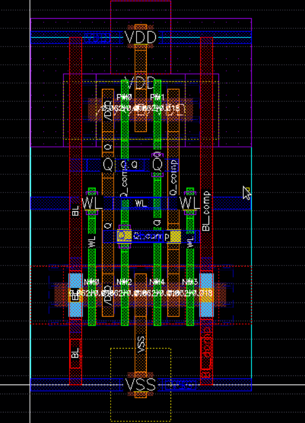
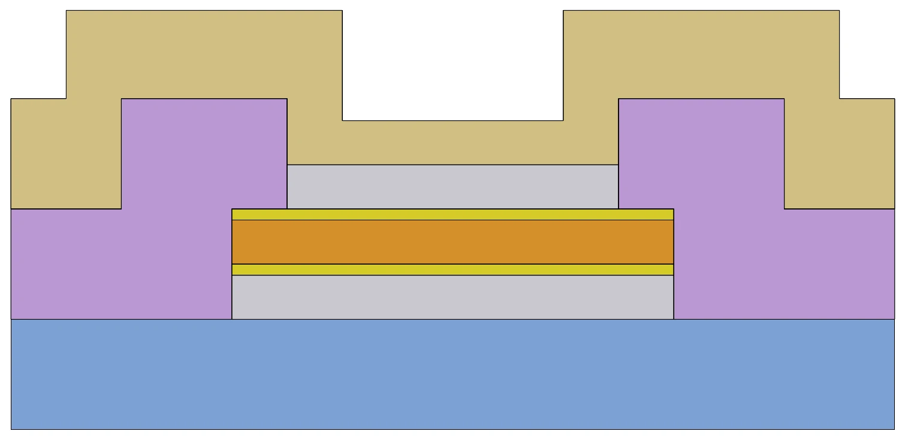
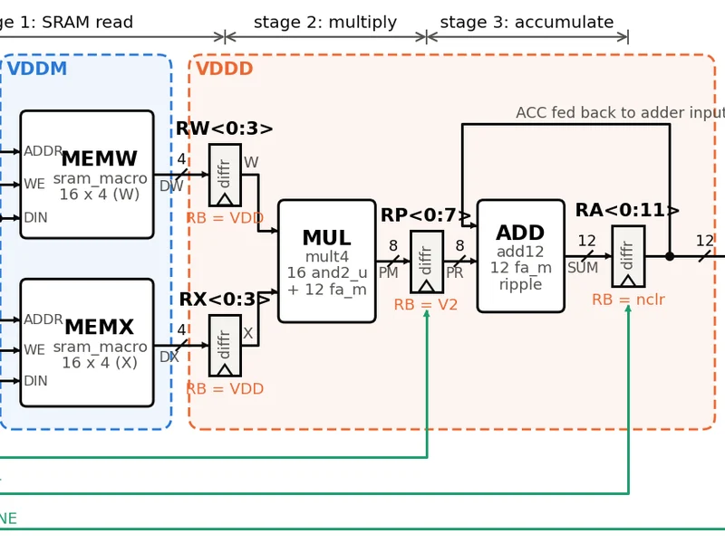
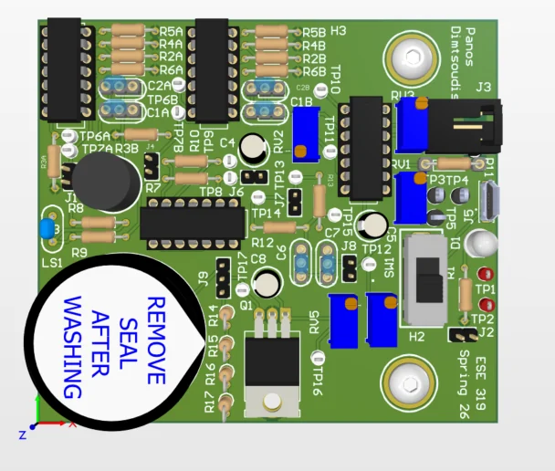
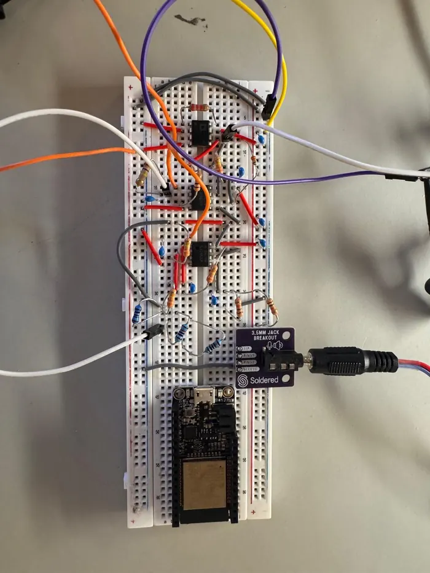
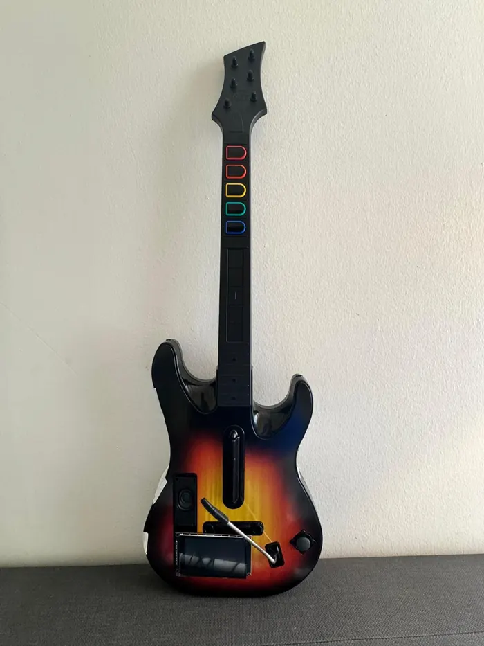
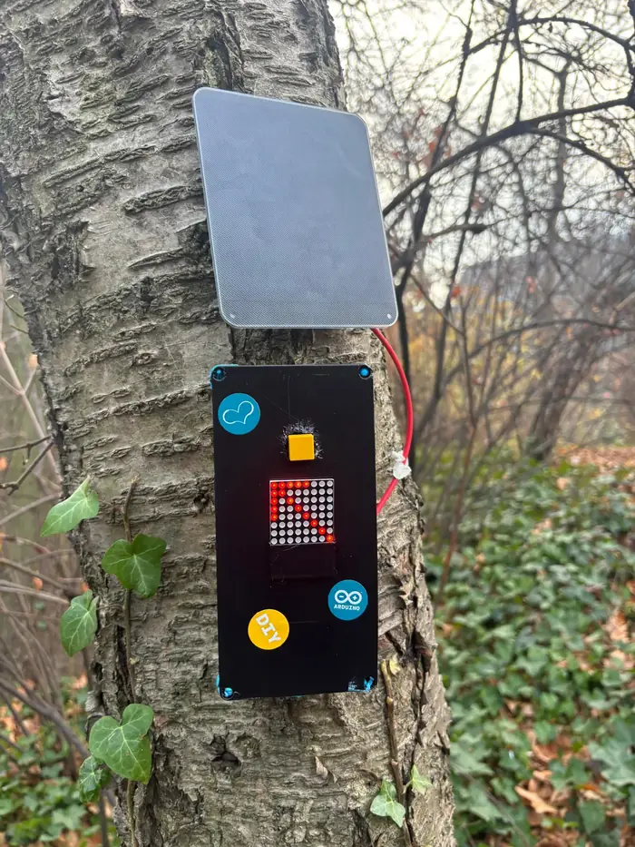

Panagiotis Dimtsoudis
I’m Panos, an electrical engineering student at Penn, originally from Greece. I design circuits at the transistor level in Cadence, build and debug analog boards, and characterize ferroelectric junctions from 14 to 400 K on probe stations.

- 1Storage nodesRead SNM 0.13 V, post-layout, 0.8 V
- 2Access transistorWrite margin 0.27 V, post-layout
- 3Bitline0.27 fF per cell, 21.8 µA read current
- 4Cell boundary0.578 × 0.912 µm = 0.527 µm²
4 × 4 multiplier delaylogical effort predicted 760 ps simulated result 890 ps17% slow
Metal detector oscillatorLTspice predicted 50.27 kHz measured result 50.2 kHz0.14% off
Selected work
All seven projects →-
AlScN Ferroelectric Junctions
Ultrathin all-nitride ferroelectric junctions for cryogenic memory. I run the probe-station measurements from 400 down to 14 K and write the Python that turns them into device parameters.
- Active stack1 nm AlN / 4 nm AlScN / 1 nm AlN
- Switchingkept from 400 to 14 K, ON/OFF > 2
- Papermanuscript in preparation

-
SRAM-Based 4‑bit MAC Accelerator
The core operation of a neural-network accelerator, a multiply-accumulate fed by two custom SRAMs, designed from the 6T bitcell up in Cadence Virtuoso.
- Read margin (SNM)0.13 V (16% of the 0.8 V supply), post-layout
- Macro access440 ps simulated, 16 × 4 macro
- Minimum clock0.90 ns on the specified test vectors
- Energy0.39 pJ per multiply-accumulate, simulated, clock excluded

-
Metal Detector PCB
Two MOSFET LC oscillators beat against each other, and metal near the search coil shifts the tone. I took it from schematic to a fabricated two-layer board, soldered it by hand, and brought it up stage by stage.
- Fixed oscillatorLTspice
predicted 50.27 kHzmeasured result 50.2 kHz

- Fixed oscillatorLTspice
-
Wireless ECG Monitor
An analog front end that lifts a heartbeat of about a millivolt out of electrode drift and 60 Hz pickup, then streams it over Bluetooth Low Energy at 200 samples per second.
- Maximum gain61 dB, measured
- Low-pass cornertarget
predicted 160 Hzmeasured result 190.5 Hz

-
Guitar Hero Synthesizer
A Guitar Hero controller rebuilt as a playable synthesizer on an ATmega328PB: bare-metal C, PWM audio with a decay envelope, whammy vibrato read through the ADC, and an I2C LCD for remapping fret notes.
- What brokeThe board reset whenever the speaker drew current. A 12 V pack and two 5 V regulators fixed it.

-
EcoBeam
A solar-powered trail node: an 8 × 8 LED direction display, temperature and CO₂ sensing, a distress button, and XBee radios that meshed between nodes in testing.
- My partThe CAD enclosure, and the information and distress modes with acknowledgments between nodes.

Experience
-
Aug 2026 – present
Teaching Assistant
ESE 2180: Electronic, Photonic, and Electromechanical Devices, Penn Engineering
I write homework, lab worksheets, and exam problems for an 80+ student device physics course. I set up and teach hands-on labs that connect device physics to measurement, hold weekly office hours on transistors, LEDs, and photovoltaics, and grade with written technical feedback.
-
May 2026 – present
Undergraduate Research Assistant
Device Research and Engineering Laboratory, Penn Engineering
I characterize 6 nm AlN/AlScN/AlN ferroelectric junctions from 14 to 400 K on cryogenic and high-temperature probe stations: DC and AC J–V, C–V, PUND pulse tests, breakdown, and endurance. I write the Python that extracts device parameters and compares switching, retention, and endurance across devices and temperature.
I contributed measurements and analysis to a manuscript in preparation on cryogenic all-nitride ferroelectric memory, and built 3D CAD models of the device stack and of an 8 × 8 crossbar array for compute-in-memory work.
The research write-up → -
Jan 2025 – present
Technology Support Specialist
University of Pennsylvania, Philadelphia, PA
I resolve hardware and software issues for Penn students in person and through a ticketing system, document fixes, coordinate escalations, and manage equipment loans.
-
Summer 2024
Computer Engineering Intern
Automation Systems Hellas, Thessaloniki, Greece
I wrote C and Python utilities for log parsing and configuration checks used during industrial-automation commissioning, updated control-panel wiring and I/O documentation, imaged PCs and HMIs, and monitored servers and network devices.